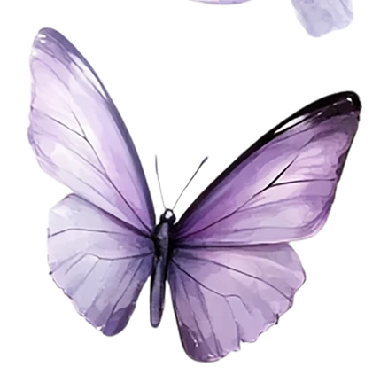

일러기반 성형
일러스트의 인상과 비율을 3D 헤드에 옮겨, 원화의 분위기를 살리는 커스텀 성형 작업입니다.
Virtual Character Production Artist
표정과 움직임, 헤어의 결까지 설계합니다.
버추얼 캐릭터의 인상과 감정을 세심하게 완성합니다.
ILLUSTRATION BASE · FACIAL · NILOTOON · HAIR COMBINATION · MAGICALCLOTH2
Selected Works
일러스트의 인상과 비율을 3D 헤드에 옮겨, 원화의 분위기를 살리는 커스텀 성형 작업입니다.
Face ID 기반 표정 추적을 위해 52종의 쉐이프키를 구성하고 자연스러운 감정 변화를 다듬습니다.
멜리고 환경에서 닐로툰의 빛과 색이 안정적으로 보이도록 셰이더와 재질을 세팅합니다.
여러 헤어 파츠를 한 디자인처럼 연결하고 실루엣과 앞·옆·뒤 균형을 세심하게 정리합니다.
머리카락과 의상 파츠의 움직임을 Magica Cloth 2 환경에 맞게 자연스럽게 세팅합니다.
처음 시작하는 분도 편하게 이야기할 수 있도록, 상담부터 전달까지 차근차근 함께합니다.
작업 범위와 일정, 필요한 파일을 먼저 확인해 보세요.
